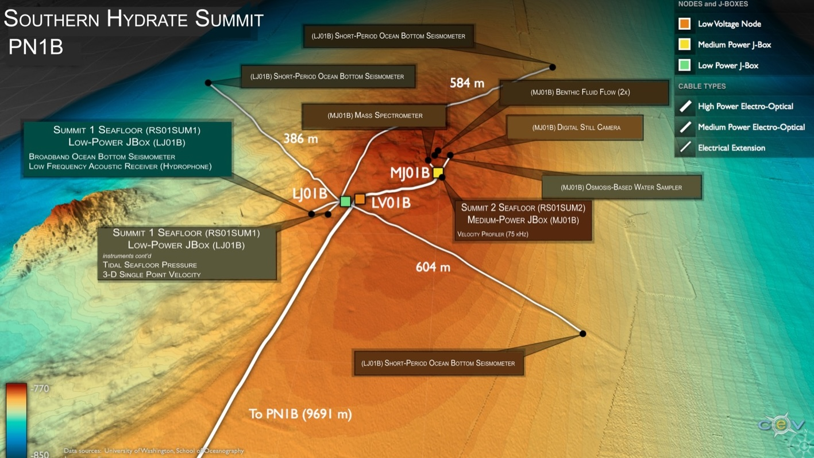
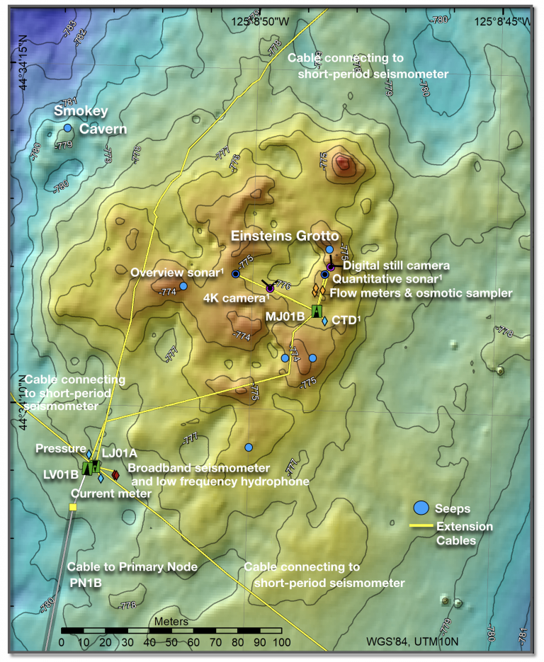

Overview
The Southern Hydrate Summit 1 Seafloor study site, situated on the continental slope off the coast of Oregon at a water depth of ~775 m, hosts abundant deposits of methane ice (methane hydrates) that are buried beneath, and sometimes exposed at the seafloor. The deposits vent methane-rich fluids and bubbles that escape through seeps on the ocean bottom. At Southern Hydrate Ridge plumes of bubbles rise several hundred meters above the seafloor. Dense and fascinating communities of microbes and animals with symbiotic microbes in their guts are fueled by these escaping gases. These seeps provide a unique opportunity to study ocean chemistry, quantifying chemical fluxes from the seafloor and the impacts of methane release on overlying seawater and biota.
Methane is a powerful greenhouse gas and, therefore, quantifying the flux of methane from the seafloor into the hydrosphere is critical to understanding carbon-cycle dynamics and the impacts of global warming on methane release, particularly in the context of the hydrates response to seismic events.
This Low-Power JBox (LJ01B) rests on the seafloor and contains geophysical and near seafloor water column instrumentation, and is attached to a fiber-optic cable. Instrumentation hosted on the JBox is largely geophysical in nature, hosting both short-period and broadband seismometers. The fiber-optic cable provides the JBox with significant power and 1 Gb communication bandwidth for two-way communication to instruments for their operation and transmission of data to shore. This JBox is also co-located with a Medium-Power JBox that collects a complementary suite of seafloor and water column measurements.


Location: 44.5691°N, 125.1481°W · ~775 m water depth.